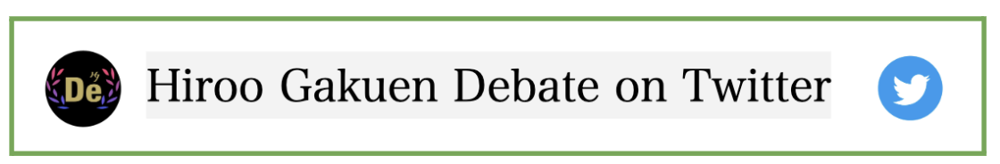
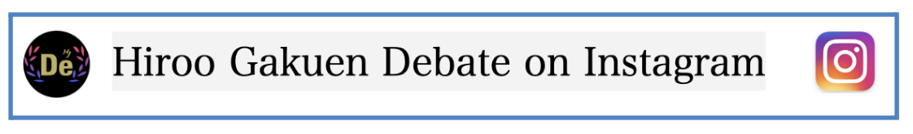

ディベート部への連絡方法は、
①TwitterでのDM,②InstagramでのDM,③フォームです。
下記の画像ボタンを押してそれぞれの連絡ページを選んでご利用ください。
下記のボタンを押すとそれぞれのページに飛びます。
①TwitterでのDM

②InstagramでのDM

③フォーム
〈連絡先〉
メールアドレス：
Twitter:
https://twitter.com/LT4Sg2l8T97dly5
Instagram:
https://instagram.com/debate_hirogaku